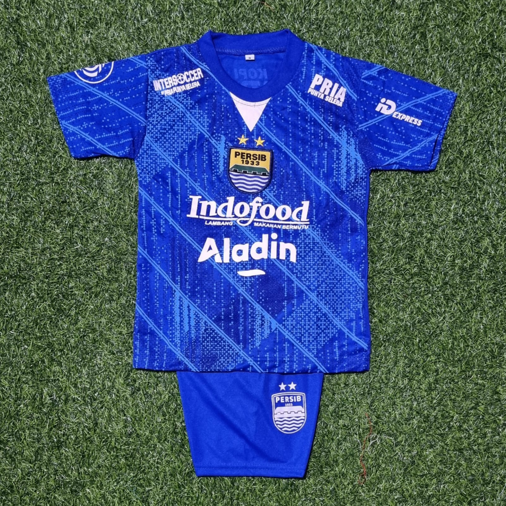

Baju Anak Persib
Jersey anak Persib Bandung
Pilihan Warna :
Rp 299.000Dirancang khusus untuk buah hati supporter Persib, bahan lembut dan ringan membuat anak nyaman bergerak sambil tetap tampil keren.
- Bahan 100% katun adem
- Logo Persib bordir halus
- Ukuran anak tersedia S, M, L
- Warna biru Persib